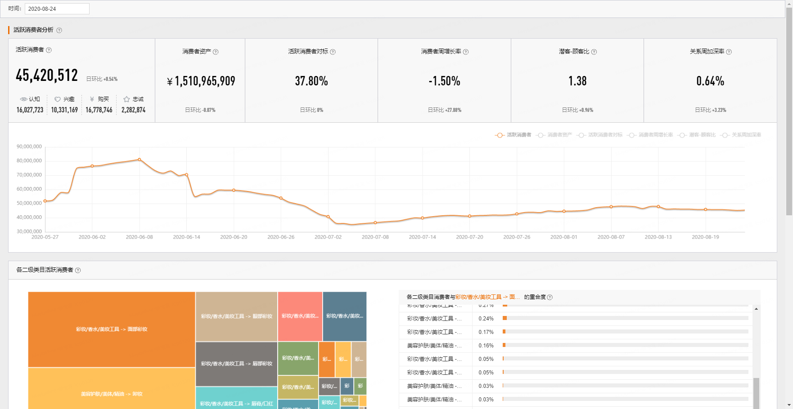
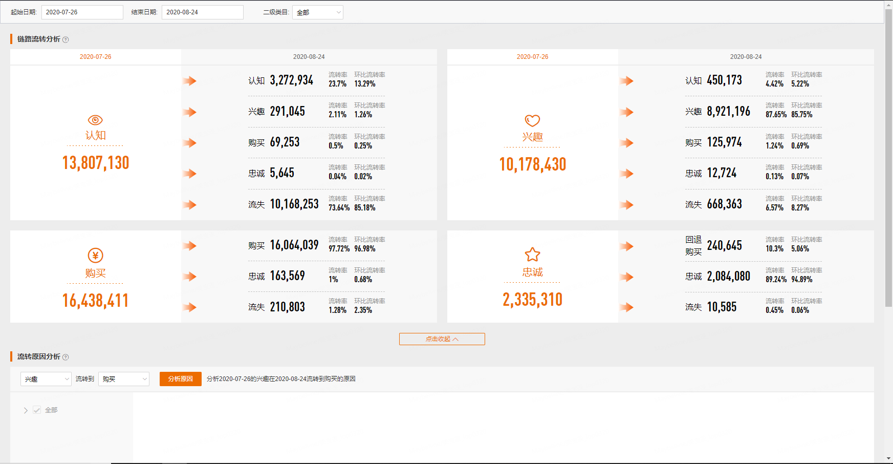
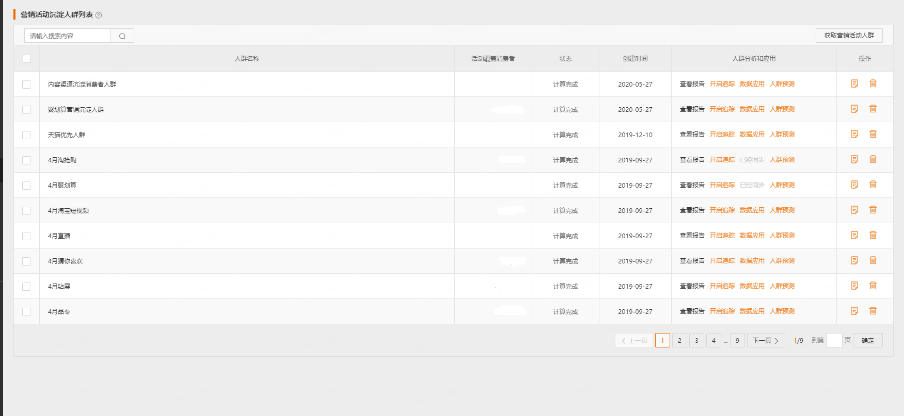

A 数据银行
A.1 消费者分析

- 活跃消费者
定义:品牌当前有效的认知（15天）、兴趣（15天）、购买（2年半）、忠诚（1年）的消费者总数。
- 消费者资产
定义:品牌最近365天的消费者未来3年内将为品牌带来的GMV预测值。预测的GMV是根据消费者总量、消费者的品类购买力、消费者转化力计算出来的。当选择全部类目时，预测的是消费者在品牌全部类目下的GMV；当选择单一类目时，预测的是品牌在该类目的消费者在对应类目下的GMV。
- 活跃消费者对标
定义:（品牌维度）与行业第一的品牌对比。品牌所在行业的消费者人数 / 该行业下第一名品牌的消费者人数。（二级类目维度）与二级类目下第一的品牌对比。 品牌在所选二级类目下的消费者人数 /该二级类目下第一名品牌的消费者人数。计算结果会做模糊处理。
- 消费者周增长率
定义: \[ （当天品牌的消费者人数-上周同一天该人数）/上周同一天该人数 \]
- 潜客-顾客比
定义:
\[ 品牌未购买消费者人数（认知+兴趣） / 已购买消费者人数（购买+忠诚） \]
- 关系周加深率
定义: 从上周同一天到当天， \[ 关系周加深率 = 关系加深消费者人数 / 上周同一天品牌消费者总人数。 \] 关系加深指的是，认知流转到兴趣，兴趣流转到忠诚等，与品牌距离拉近的流转
各二级类目活跃消费者
定义:可以分析您品牌下各二级类目的活跃消费者占比，以及彼此的重合度，有助于做跨类目营销。
各二级类目与所选二级类目的活跃消费者重合度
定义:各二级类目与所选二级类目的活跃消费者重合度 = 重合的消费者人数 / 所选二级类目的活跃消费者人数
A.2 全链路分布
AIPL 人数

Aware 认知
消费者 相对被动 与品牌接触。包括:
- 曝光&点击:
- 15天内，被阿里妈妈广告曝光过或点击过阿里妈妈广告；
- 或被优酷广告曝光过；
- 或被超级品牌日天猫手机客户端的资源位曝光过；
- 或被欢聚日活动曝光过；
- 或被聚划算曝光过；
- 或被淘抢购曝光过；
- 或被手淘导购平台（有好货、生活研究所）的商品曝光过；
- 或点击过必买清单的商品；
- 或点击过猜你喜欢的商品；
- 或被淘宝头条内容曝光过（阅读了淘宝头条文章）；
- 或被微淘内容曝光过；
- 或被天猫快闪店的品牌活动曝光；
- 或被天合计划资源曝光或点击（包括，天合代币置换站内资源曝光点击人群，流量宝流量反哺曝光点击人群，TOP计划曝光点击人群）；
- 摇一摇曝光。
- 浏览:
- 15天内，浏览了品牌号站点页面；
- 或浏览了互动吧页面；
- 或浏览过超级品牌日活动页；
- 或浏览过天猫超市大牌狂欢活动页；
- 或在试用中心浏览过品牌商品；
- 或发生过无品牌倾向搜索且点击；
- 或浏览过品牌旗舰店；
- 或浏览过1次品牌商品；
- 或浏览iStore小程序主页。
- 观看: 15天内，观看过淘宝短视频，或观看过品牌的直播。
- 注意: 品牌属性的触点只会归属品牌AIPL，不会归属二级类目AIPL，例如，以下触点（付费广告，品牌号，超级品牌日，欢聚日，直播，淘宝头条，微淘，天合计划，线下门店，快闪店，智能母婴室）的消费者仅归属品牌AIPL，不会归属二级类目AIPL。"
Interest 兴趣
消费者主动与品牌发生接触。包括:
- 会员: 品牌号会员；品牌授权店铺的会员。
- 粉丝: 品牌号订阅粉丝。 互动吧关注粉丝；微淘粉丝（同收藏了授权店铺）。即只要处于会员或粉丝状态就属于兴趣。
- 互动:
- 15天内，参与了品牌号互动（预约了品牌服务）；
- 在品牌互动吧有以下互动行为（预约核销成功，领取了新享样品，完成了新零售订单，擂台答题成功，参与乐透抽奖，参与新零售贩卖机互动，参与60s课堂）；
- 在试用中心申请过品牌商品试用；
- 参与了淘宝头条互动（对淘宝头条内容进行了评论、点赞、分享、收藏、参与过淘宝头条的提问、投票）；
- 参与了微淘互动（对微淘内容进行了评论、点赞、收藏、转发）；
- 参与了天猫快闪店的品牌互动；发生了有品牌倾向搜索；
- 淘宝彩蛋分享扫码；
- 参与了天猫母婴室互动（领样、加会员粉丝）。
- 浏览: 15天内，浏览过大于等于2天品牌商品。
- 收藏/加购：15天内，收藏/加购过品牌商品的消费者；预售付定金。
- 领取试用装: 15天内，在菜鸟驿站领取了试用装；在线下门店随身购物袋扫码。
Purchase 购买
- 最近2年半（2*365天+180天），购买了品牌商品的所有消费者（包括在品牌号通过Passport支付购买的消费者、包括预售付尾款的消费者、购买商品后淘宝彩蛋扫码人群、包括线下云POS支付的消费者、包括iStore小程序购买的消费者）减去“Loyalty 忠诚”的消费者。
- 活跃购买: 最近365天内购买过品牌商品的消费者。"
Loyalty 忠诚
- 365天内有过正向的评论\正向的追评;
- 365天内购买过该品牌商品（包括在品牌号通过Passport支付购买的消费者、包括预售付尾款的消费者、包括线下云POS支付的消费者、包括iStore小程序购买的消费者）大于等于2天的消费者。
A.3 链路流转分析

链路流转分析
定义: 分析起始日期的消费者到截止日期当天发生流转的人数 环比流转率：所选周期前一个周期的流转率，例如，20181205-20181207的环比流转率为20181203-20181205的流转率
# 应用
FAST分析中的A(Advancing)，即AIPL周关系加深率。从首日到第七日，关系加深消费者人数 / 首日品牌消费者总人数。
关系加深指的是，A流转到IPL，I流转到PL，P流转到L。
A.4 粉丝会员分析
粉丝
定义: 当前关注品牌的消费者，包括关注品牌授权店铺、关注授权店铺微淘、关注品牌号、关注互动吧的人群 绑卡粉丝：既是粉丝又是会员的消费者 粉丝人均资产：当前粉丝人群未来3年人均可为品牌带来的GMV预估 粉丝活跃率：最近30天跟品牌有过互动的粉丝人数/当前粉丝总人数。互动是指有过主动传播行为、或对品牌相关的内容有过浏览转评赞行为、或在品牌的微淘、互动吧、品牌号有过互动行为"
会员
会员：符合入会门槛且主动确认加入品牌会员的消费者。若您品牌有多个授权店铺，此处为多个店铺会员去重后的人数 会员人均资产：当前会员人群未来3年人均可为品牌带来的GMV预估 会员活跃率：近30天有加购、收藏、领取权益或购买的会员人数 / 当前会员总人数
A.5 自定义分析
A.6 营销活动沉淀

营销活动沉淀人群列表
应用：将阿里各个营销平台的活动人群，沉淀到数据银行，长期追踪和再应用
A.7 定制化报告
A.8 数据融合
A.9 数据应用
A.10 数据应用
将数据银行中的消费者，通过“数据应用”，应用到阿里的各个营销渠道
A.11 数据应用市场
- 数据应用市场